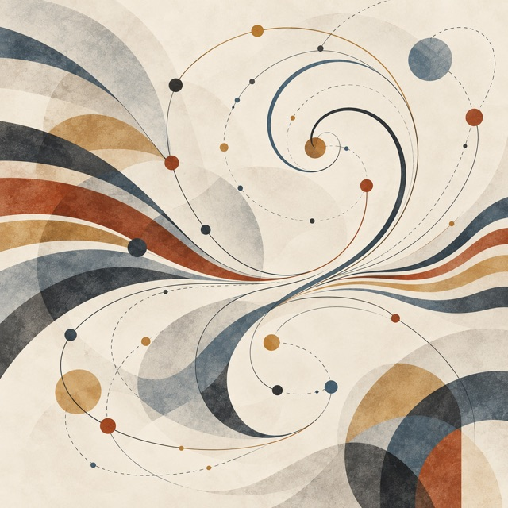

Session 4
Functional Programming and Control
Functional programming and control: who decides the next step? Recursion and the stack, the loop as a value, evaluation order and parameter passing — then the λ-calculus as the formalism.
Session 4
Functional programming and control: who decides the next step? Recursion and the stack, the loop as a value, evaluation order and parameter passing — then the λ-calculus as the formalism.

Who, and how, decides the next step of a computation? Block 1 asks it four times in real languages — at a function call, across an iteration, in the order and the moment arguments are evaluated — and each time sets beside the explicit control a functional way to express it: recursion, a function passed as the body of a loop, a function that delays an argument. Block 2 formalises those choices in the smallest functional language there is, the λ-calculus: three forms, one rule, and the strategy that picks the next redex.
| 1 | Control patterns: recursion, the stack, fold, evaluation. Two definitions of computing (1936); a call on the machine and in the calculus; recursion and loops; the loop as a value; evaluation order and parameter passing. slides (web, with the demos) · PDF |
| 2 | The formalism: the λ-calculus.
Syntax, free variables, β-reduction, substitution; normal and applicative order, the
small-step rules; booleans, numbers, if and recursion from three forms; laziness.
slides (web, with the steppers) ·
PDF |
The web slides run their code: Python in the page, JavaScript, and a λ-calculus stepper with a switch for the strategy. → moves one step; T lists the parts.
| The question | The answer |
|---|---|
| What is computing? | Two definitions, 1936. In the machine the next step is a function of the state; in the calculus it is a relation, and a strategy makes it a function. |
| What does a machine need to call a function? | A frame. The stack holds what the calculus keeps in the term. Every loop can be written as a tail-recursive function, every recursion as a loop with a stack. |
| Do we need a loop construct at all? | No. The recursion is written once, in fold; a use passes the body and
writes no control. fold_left and fold_right differ in the
order of applying f. |
| In which order, and when, are arguments evaluated? | The language decides both: the order (fixed or unspecified) and the mode — by
value, by name, by need. Under call by value if cannot be a function
unless the caller delays the branches. |
Each time, functional programming expressed the control through recursion and function
values: recursion rather than an explicit stack, fold rather than a loop, a
function that delays rather than an argument evaluated first. Implicit control is not
particular to it: an imperative program also has a call stack and an evaluation order that
the language fixes.
(λx. λy. y) Ω gives
λy. y in normal order, and runs for ever in applicative order.| Strategy | An argument is evaluated | What it costs |
|---|---|---|
| call by value | before the call, once | work on arguments never used; Ω is fatal |
| call by name | at each use | the same argument evaluated many times |
| call by need | at first use, once | a delayed argument kept, and updated when it is first used; memory held until then; and when evaluation has effects, their order is no longer readable from the program |
;, no while, no if.
Control lives in values, and the values are functions: a boolean picks, a numeral repeats,
Y recurses, a thunk delays. Functions as values are not a feature the calculus
happens to have: they are what a language without control syntax must have, and they
suffice.Session 4 asked what the language decides: whether a call keeps a frame, in what order the
arguments go, and when an argument is evaluated. It also showed the program taking these
decisions itself, with an explicit stack, with fold, with branches wrapped in
functions. Session 5 develops these techniques: iterators, thunks, streams.
The calculus has three forms: a variable x, a function λx. t,
an application t u. No numbers, no booleans, no let, no
if. Block 2 defines them from the three forms:
(* a boolean is a choice: given two things, it picks one *) true = λt. λf. t false = λt. λf. f if = λc. λt. λe. c t e (* a number is a repetition: n applies f to x, n times *) 0 = λf x. x 3 = λf x. f (f (f x)) succ = λn f x. f (n f x) add = λm n f x. m f (n f x) (* recursion without let rec *) Y = λf. (λx. f (x x)) (λx. f (x x)) Z = λf. (λx. f (λv. x x v)) (λx. f (λv. x x v))
if only hands the two branches to the condition. It is a function under normal
order; under call by value both branches are evaluated before the choice, and
if is a function only when the caller delays them: block 1’s
myIf, with each branch wrapped in a function.fold taken literally.Y g under call by value evaluates x x first, for ever.
Z wraps it in a thunk, λv. x x v: the same repair as for
if. OCaml refuses the type of Y before it can run it; why is
session 10.The evaluator is three OCaml types and a few functions that match on them.
type term = | Var of string (* x *) | Lam of string * term (* λx. t *) | App of term * term (* t u *) type strategy = CBN | CBV | Normal type value = Closure of string * term * env and env = (string * value) list
term has one constructor per form of the calculus: the table of the slide
Syntax: three forms, written as a type. The functions of the warm-up take a term
apart with a match on these three cases.strategy is the switch of the stepper, as a value. step matches
on it and returns step_cbn, step_cbv or step_normal;
the rules of each strategy are one match case each.value and env are defined together, with and: an
environment holds values, and a closure holds an environment. A function value is its
parameter, its body, and the bindings it was made in. What the closure carries is
session 5’s first question.Two extensions change these types. A small ML adds Int,
Add, If and Let to term, and the evaluator
becomes a language; session 10 gives it a type checker. A meta-circular
evaluator replaces Closure by VFun of (value -> value): a
constructor that carries an OCaml function, so a λ of the calculus becomes a function of
OCaml. readback shows what is lost.
| W | Warm-up. Five reductions on paper, then four functions on the
term type: size, free_vars, is_closed, subst without capture.
the sheet (PDF) |
| A | Small-step. One step under call by name, under call by value, and in
full normal order; (λx. λy. y) Ω ends under one and not the other, in our own code. |
| B | Big-step. An environment instead of substitution; a function value that carries the environment it was made in — a closure. |
the lab page ·
README ·
source files: lambda.ml (the file we edit),
term.ml, syntax.ml,
main.ml · the whole folder.
Nothing is handed in; the checks in main.ml say which parts remain.
| Language | Role |
|---|---|
| OCaml | read in both blocks, write in the lab — the evaluator for the calculus |
| λ-calculus | read and run in the stepper on the slides, write on the warm-up sheet |
| Python | read and run on the slides:
count with and without a stack, Y and Z |
| JavaScript | read and run on the slides: the order
in which arguments are evaluated, myIf with and without the branches as functions |
| C, Java, Scheme, Haskell | read in the tables: tail calls, the loop as a value, the order of arguments, the parameter-passing modes |
None of this is required. Everything on the slides comes from the list on their last page; these are the parts of it that can be read online. Landin’s paper is on its publisher’s site, which may ask for a university login.
Closure.